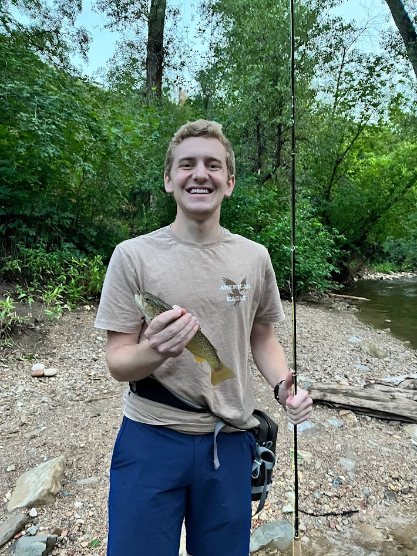

My Favorite Types of Fishing
- Ice Fishing
- Needs to be cold
- Utah has some great mountain lakes that are great for ice fishing
- Super fun with friends
- Deep Sea Fishing
- I've only gone once but it's super fun
- Fly Fishing
- A lot less reeling is required
- The Provo River is an amazing spot to catch some fish
- Lakes in the Uintas are also great
- Other (fishing from the shore)
- The easisest to show to new fishers
- Can be done with bait or a spinner of some type